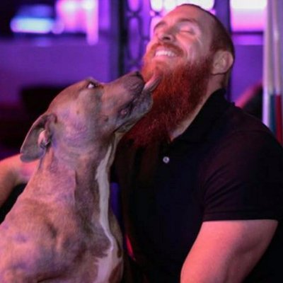

About Me
I'm just a man without a plan! But I have been dabbling in the domonic arts of web development for the better part of a decade. I took some classes out of curiousity when I attended NC State. Then followed up with learning on my own post graduation. I have a pitbull and I enjoy the gym. That last statement sums up about 90% of my life and I'm very happy about that. I'm a strong advocate of adopting a pitbull. Dallas came to me via Cause for Paws of NC.
More about me professionally, after college I started my own marketing business where I focused on social and mobile marketing. I also started a social group called Explore Raleigh. The two have merged and it's worked out well for me. But I enjoy challenges, puzzles, M & M's and South Park so web development comes rather naturally. I'm excited about what the future may hold!
I'm also a Deadpool fan.
Connect with Me